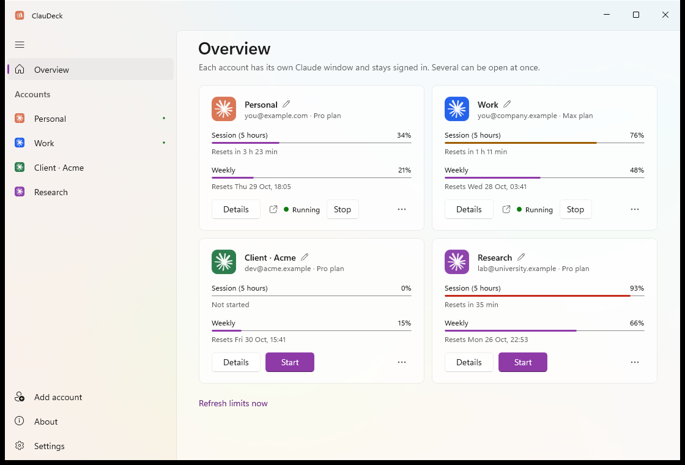
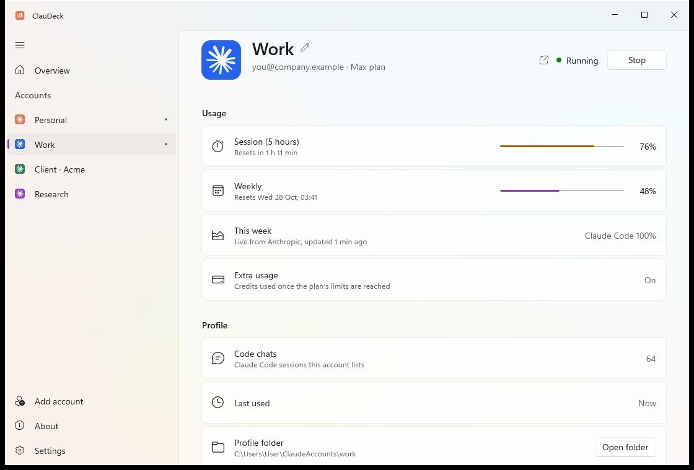
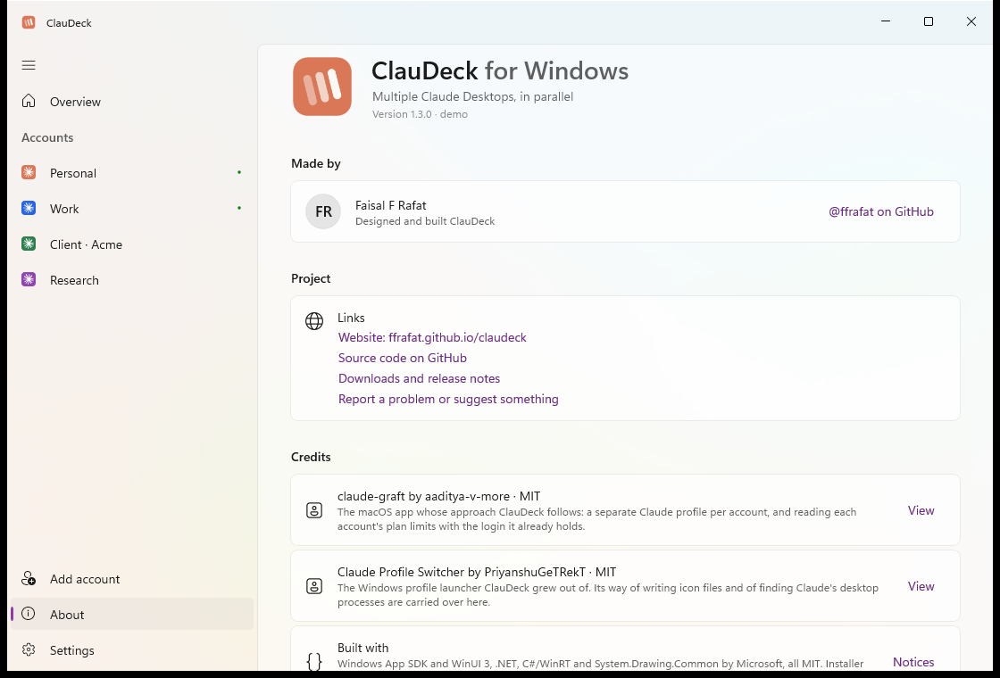

ClauDeck for Windows
Multiple Claude Desktops, in parallel. Every account you have, side by side, each signed in for good, with live usage limits for all of them.
Free and open source · MIT licence · No administrator rights needed

One login at a time was never enough.
Claude Desktop holds a single account. With a personal account and a work one, or one per client, you spend the day signing out and back in. Mac users have tools for this. On Windows there was nothing that held up.
Without ClauDeck
Sign out, sign in, lose your place. Profile tricks that used to work now open on your main account's data after a Claude update, and one wrong click signs your main account out.
With ClauDeck
Every account has its own Claude window, data and sign-in, all running at once. Sign each one in once. ClauDeck checks every launch landed in the right place, so nothing gets mixed up.
Everything about your accounts, in one window.
A native Windows 11 app, built with WinUI 3. It sits in your notification area and stays out of the way until you need it.
Every account in parallel
Start, bring to front or stop each account's Claude from one place. They all run side by side under your one Windows user.
Signed in for good
No more signing out to switch. Each account keeps its own login, so it opens straight into your work every time.
Live limits for all of them
5-hour and weekly usage with reset times, even for accounts that aren't open. Amber at 70%, red at 90%.
Tell your Claudes apart
Each account gets a coloured avatar, and its Claude icon in the notification area turns the same colour, with its name on hover.
Feels like Windows 11
Mica or Acrylic, light and dark, a Settings-style sidebar and Windows' own dialogs. It looks like it shipped with your PC.
Safe by design
After every launch ClauDeck checks which folder Claude really used, and warns you instead of letting one account land on another's data.
Details when you want them.

Every account, in detail
Each account has its own page, laid out like Windows Settings. Start or stop its Claude, see its 5-hour and weekly limits with reset times, what this week went on, its chats and folder, and pick its avatar colour.

Open source, with credit where it's due
Free under the MIT licence, with every line on GitHub. The About page names who made it, the projects it builds on, and exactly what it sends where: each account's limits from Anthropic, and nothing else.
Three steps, then forget about it.
ClauDeck uses the Claude Desktop you already have. Your main Claude stays exactly as it is and still opens from Start as usual.
Install and open
Your usual Claude account is already there, with its limits.
Add an account
Give it a name and sign in once in the Claude window that opens. It gets its own data folder and colour.
Start any of them
Start, switch to or stop each one from ClauDeck, the tray, or its own shortcut in Start.
Your data stays here
No account, no telemetry. To show limits, each account's existing access token goes to api.anthropic.com and nowhere else.
Logins are never touched
ClauDeck never uses or changes the long-term login, so it can't sign anything out. Uninstalling keeps your accounts unless you choose otherwise.
Open source
Every line is on GitHub under the MIT licence. Build it yourself with one script.
Good to know.
Does ClauDeck change my normal Claude?
No. Your main account keeps using Claude's own data and opens from Start exactly as before. Extra accounts run the same installed Claude, each with a folder of its own.
Why does Windows say "Windows protected your PC"?
ClauDeck isn't code-signed yet, so SmartScreen doesn't recognise it. Choose More info, then Run anyway. Each release lists SHA-256 checksums so you can check your download.
Anything to watch out for when signing in?
Sign in inside the new account's Claude window. If signing in sends you to your web browser and back, Windows hands that link to your main Claude, so leave your other Claude windows alone until it finishes. Afterwards, check that each account shows the right email in ClauDeck.
What happens when Claude updates?
Accounts keep working as they are. ClauDeck checks every launch landed in that account's own folder, and if an update ever changes how Claude stores its data, it warns you and offers to close the window, before anything can be signed out.
Is this allowed?
ClauDeck only starts the Claude app you already have, with separate folders. Whether and how you use several Claude accounts is governed by Anthropic's terms, which are worth reading.
How do I uninstall it?
Settings → Apps → ClauDeck → Uninstall. It asks whether to keep the accounts you added. Keep them, and reinstalling brings every account back signed in. Your main Claude account is never touched either way.
Is there a Mac version?
ClauDeck is Windows only. On the Mac, claude-graft does the same job, and ClauDeck follows its approach.
Stop signing out. Start ClauDeck.
Free, open source, and made for Windows.